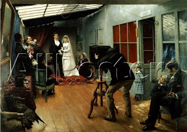

Kiddushin 10 - Ten Men Attack a Betrothed Virgin
If ten man anally cohabited with a betrothed virgin, she is still considered a virgin, and all ten are liable to stoning. If her groom does this, she is not a virgin.
In Kiddushin through copulation (not encouraged), does the initial stage or the complete penetration effect acquisition? Although adultery is committed at the initial stage, in Kiddushin the man's intention is for complete penetration, which therefore effects the acquisition.
Cohabitation for the sake of betrothal effects only the first stage of marriage, Kiddushin. The couple still needs the second stage (Huppah), formally bringing the wife into the husband's domain.
Purpose of the blog
Mistakes are completely mine, and final law can not be definitively deduced from the summaries. Have a great day!